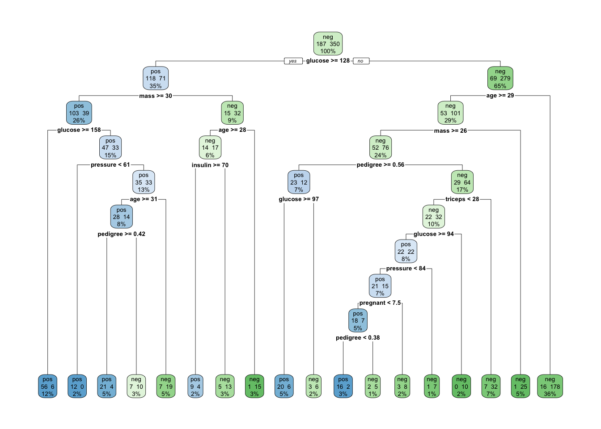
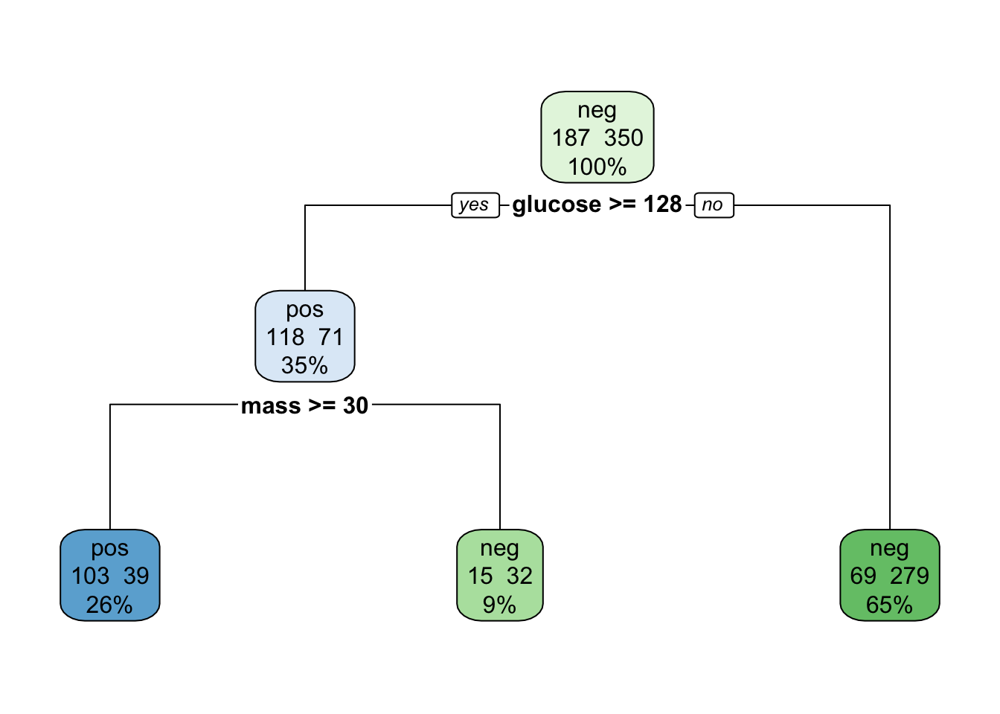
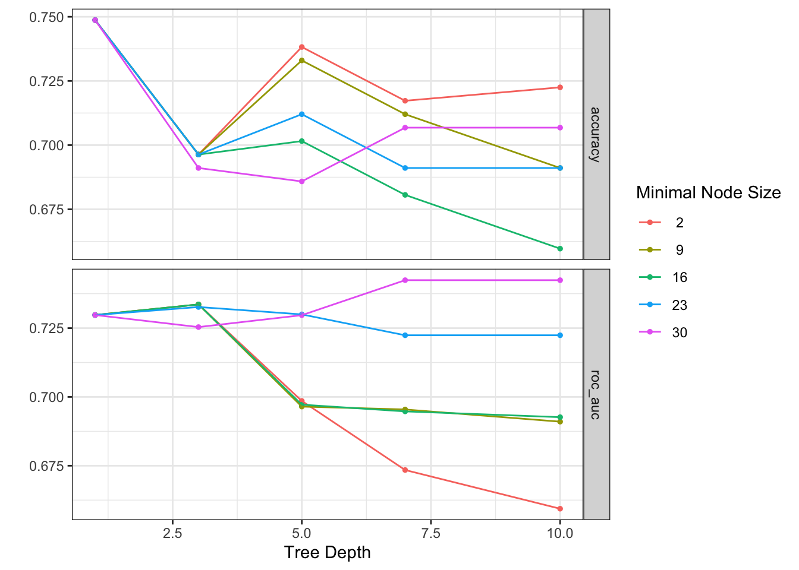
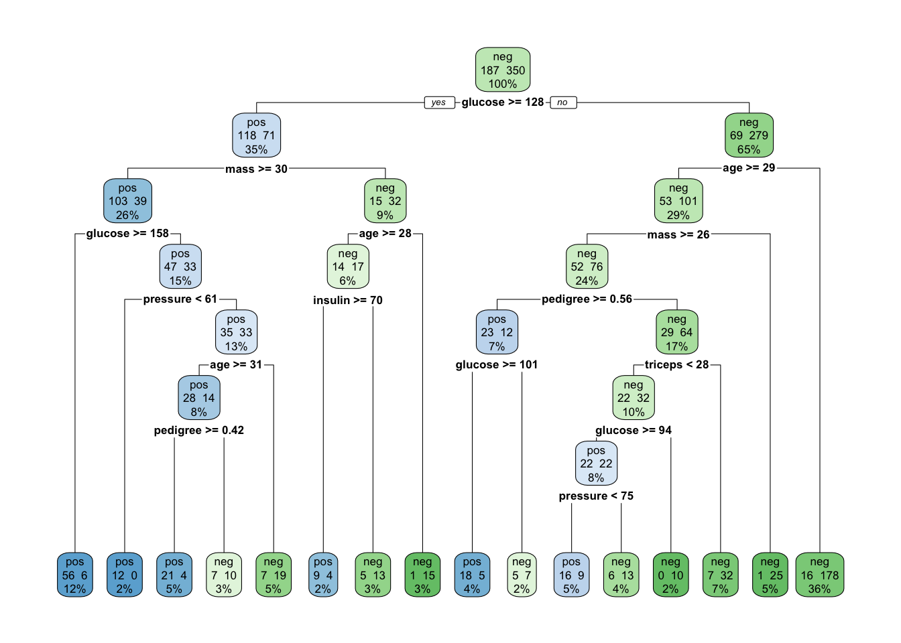

# Load libraries
library(tidymodels)
library(mlbench)
library(tidyverse)
library(rpart.plot) # for plotting the fitted rpart tree
theme_set(theme_bw())
set.seed(123)Decision Trees in Classification (tidymodels)
Fitting a classification decision tree (tidymodels)
1. Data preparation and split
# Load the dataset and inspect
data("PimaIndiansDiabetes")
pima <- PimaIndiansDiabetes %>%
as_tibble() %>%
mutate(
diabetes = factor(diabetes),
diabetes = forcats::fct_relevel(diabetes, "pos", "neg") # make 'pos' the event
)
levels(pima$diabetes)[1] "pos" "neg"head(pima)# A tibble: 6 × 9
pregnant glucose pressure triceps insulin mass pedigree age diabetes
<dbl> <dbl> <dbl> <dbl> <dbl> <dbl> <dbl> <dbl> <fct>
1 6 148 72 35 0 33.6 0.627 50 pos
2 1 85 66 29 0 26.6 0.351 31 neg
3 8 183 64 0 0 23.3 0.672 32 pos
4 1 89 66 23 94 28.1 0.167 21 neg
5 0 137 40 35 168 43.1 2.29 33 pos
6 5 116 74 0 0 25.6 0.201 30 neg We split into training and testing datasets (70/30), stratifying by the outcome:
2. Basic decision tree (no tuning)
We start with a very simple tree model using all predictors.
# Model specification: basic classification tree
tree_spec_basic <- decision_tree() %>%
set_engine("rpart") %>%
set_mode("classification")
# Recipe: use all predictors as-is
tree_rec <- recipe(diabetes ~ ., data = train_data)
# Workflow: model + recipe
tree_wf_basic <- workflow() %>%
add_model(tree_spec_basic) %>%
add_recipe(tree_rec)
tree_wf_basic══ Workflow ════════════════════════════════════════════════════════════════════
Preprocessor: Recipe
Model: decision_tree()
── Preprocessor ────────────────────────────────────────────────────────────────
0 Recipe Steps
── Model ───────────────────────────────────────────────────────────────────────
Decision Tree Model Specification (classification)
Computational engine: rpart Fit the workflow on the training set:
tree_fit_basic <- tree_wf_basic %>%
fit(data = train_data)
tree_fit_basic══ Workflow [trained] ══════════════════════════════════════════════════════════
Preprocessor: Recipe
Model: decision_tree()
── Preprocessor ────────────────────────────────────────────────────────────────
0 Recipe Steps
── Model ───────────────────────────────────────────────────────────────────────
n= 537
node), split, n, loss, yval, (yprob)
* denotes terminal node
1) root 537 187 neg (0.34823091 0.65176909)
2) glucose>=127.5 189 71 pos (0.62433862 0.37566138)
4) mass>=29.95 142 39 pos (0.72535211 0.27464789)
8) glucose>=157.5 62 6 pos (0.90322581 0.09677419) *
9) glucose< 157.5 80 33 pos (0.58750000 0.41250000)
18) pressure< 61 12 0 pos (1.00000000 0.00000000) *
19) pressure>=61 68 33 pos (0.51470588 0.48529412)
38) age>=30.5 42 14 pos (0.66666667 0.33333333)
76) pedigree>=0.415 25 4 pos (0.84000000 0.16000000) *
77) pedigree< 0.415 17 7 neg (0.41176471 0.58823529) *
39) age< 30.5 26 7 neg (0.26923077 0.73076923) *
5) mass< 29.95 47 15 neg (0.31914894 0.68085106)
10) age>=27.5 31 14 neg (0.45161290 0.54838710)
20) insulin>=69.5 13 4 pos (0.69230769 0.30769231) *
21) insulin< 69.5 18 5 neg (0.27777778 0.72222222) *
11) age< 27.5 16 1 neg (0.06250000 0.93750000) *
3) glucose< 127.5 348 69 neg (0.19827586 0.80172414)
6) age>=28.5 154 53 neg (0.34415584 0.65584416)
12) mass>=26.35 128 52 neg (0.40625000 0.59375000)
24) pedigree>=0.561 35 12 pos (0.65714286 0.34285714)
48) glucose>=96.5 26 6 pos (0.76923077 0.23076923) *
49) glucose< 96.5 9 3 neg (0.33333333 0.66666667) *
25) pedigree< 0.561 93 29 neg (0.31182796 0.68817204)
50) triceps< 27.5 54 22 neg (0.40740741 0.59259259)
100) glucose>=93.5 44 22 pos (0.50000000 0.50000000)
200) pressure< 84 36 15 pos (0.58333333 0.41666667)
400) pregnant< 7.5 25 7 pos (0.72000000 0.28000000)
800) pedigree< 0.379 18 2 pos (0.88888889 0.11111111) *
801) pedigree>=0.379 7 2 neg (0.28571429 0.71428571) *
401) pregnant>=7.5 11 3 neg (0.27272727 0.72727273) *
201) pressure>=84 8 1 neg (0.12500000 0.87500000) *
101) glucose< 93.5 10 0 neg (0.00000000 1.00000000) *
51) triceps>=27.5 39 7 neg (0.17948718 0.82051282) *
13) mass< 26.35 26 1 neg (0.03846154 0.96153846) *
7) age< 28.5 194 16 neg (0.08247423 0.91752577) *3. Visualise the basic tree
We can extract the underlying rpart object and use rpart.plot():
tree_fit_basic %>%
extract_fit_parsnip() %>%
pluck("fit") %>%
rpart.plot(extra = 101)Warning: Cannot retrieve the data used to build the model (so cannot determine roundint and is.binary for the variables).
To silence this warning:
Call rpart.plot with roundint=FALSE,
or rebuild the rpart model with model=TRUE.
4. Predictions and performance (basic tree)
We now evaluate performance on train and test data.
4.1 Training predictions
train_preds_basic <- predict(tree_fit_basic, train_data, type = "prob") %>%
bind_cols(predict(tree_fit_basic, train_data, type = "class")) %>%
bind_cols(train_data)
head(train_preds_basic)# A tibble: 6 × 12
.pred_pos .pred_neg .pred_class pregnant glucose pressure triceps insulin
<dbl> <dbl> <fct> <dbl> <dbl> <dbl> <dbl> <dbl>
1 0.0825 0.918 neg 1 89 66 23 94
2 0.273 0.727 neg 10 115 0 0 0
3 0.125 0.875 neg 4 110 92 0 0
4 0.179 0.821 neg 1 103 30 38 83
5 0.0825 0.918 neg 1 97 66 15 140
6 0.692 0.308 pos 13 145 82 19 110
# ℹ 4 more variables: mass <dbl>, pedigree <dbl>, age <dbl>, diabetes <fct>The .pred_pos column contains the estimated probability of "pos" (diabetes present), and .pred_class is the predicted class using the default threshold 0.5.
4.2 Testing predictions
test_preds_basic <- predict(tree_fit_basic, test_data, type = "prob") %>%
bind_cols(predict(tree_fit_basic, test_data, type = "class")) %>%
bind_cols(test_data)
head(test_preds_basic)# A tibble: 6 × 12
.pred_pos .pred_neg .pred_class pregnant glucose pressure triceps insulin
<dbl> <dbl> <fct> <dbl> <dbl> <dbl> <dbl> <dbl>
1 0.84 0.16 pos 6 148 72 35 0
2 0.179 0.821 neg 1 85 66 29 0
3 0.278 0.722 neg 8 183 64 0 0
4 0.0385 0.962 neg 5 116 74 0 0
5 0.278 0.722 neg 10 139 80 0 0
6 0.692 0.308 pos 5 166 72 19 175
# ℹ 4 more variables: mass <dbl>, pedigree <dbl>, age <dbl>, diabetes <fct>4.3 Confusion matrices and metrics
We can use yardstick metrics (tidymodels) instead of caret::confusionMatrix.
class_metrics <- yardstick::metric_set(
yardstick::accuracy,
yardstick::precision,
yardstick::recall,
yardstick::sens,
yardstick::specificity
)Training performance:
train_conf_basic <- conf_mat(train_preds_basic,
truth = diabetes,
estimate = .pred_class)
train_conf_basic Truth
Prediction pos neg
pos 134 22
neg 53 328train_metrics_basic <- train_preds_basic %>%
class_metrics(truth = diabetes, estimate = .pred_class)
train_metrics_basic# A tibble: 5 × 3
.metric .estimator .estimate
<chr> <chr> <dbl>
1 accuracy binary 0.860
2 precision binary 0.859
3 recall binary 0.717
4 sens binary 0.717
5 specificity binary 0.937Testing performance:
test_conf_basic <- conf_mat(test_preds_basic,
truth = diabetes,
estimate = .pred_class)
test_conf_basic Truth
Prediction pos neg
pos 44 18
neg 37 132test_metrics_basic <- test_preds_basic %>%
class_metrics(truth = diabetes, estimate = .pred_class)
test_metrics_basic# A tibble: 5 × 3
.metric .estimator .estimate
<chr> <chr> <dbl>
1 accuracy binary 0.762
2 precision binary 0.710
3 recall binary 0.543
4 sens binary 0.543
5 specificity binary 0.88 As expected, training accuracy is higher than testing accuracy → the tree is starting to overfit the training data.
Hyperparameters (manual change)
Decision trees have several stopping criteria (hyperparameters) that control complexity and help reduce overfitting. In tidymodels these are, for example:
-
tree_depth– maximum depth of the tree
-
min_n– minimum number of samples in a terminal node
-
cost_complexity– complexity parameter (cp) for pruning
We can manually set some of these and see the effect.
tree_spec_shallow <- decision_tree(
tree_depth = 3,
min_n = 20
) %>%
set_engine("rpart") %>%
set_mode("classification")
tree_wf_shallow <- workflow() %>%
add_model(tree_spec_shallow) %>%
add_recipe(tree_rec)
tree_fit_shallow <- tree_wf_shallow %>%
fit(data = train_data)
tree_fit_shallow %>%
extract_fit_parsnip() %>%
pluck("fit") %>%
rpart.plot(extra = 101)Warning: Cannot retrieve the data used to build the model (so cannot determine roundint and is.binary for the variables).
To silence this warning:
Call rpart.plot with roundint=FALSE,
or rebuild the rpart model with model=TRUE.
Evaluate the shallow tree
train_preds_shallow <- predict(tree_fit_shallow, train_data, type = "prob") %>%
bind_cols(predict(tree_fit_shallow, train_data, type = "class")) %>%
bind_cols(train_data)
test_preds_shallow <- predict(tree_fit_shallow, test_data, type = "prob") %>%
bind_cols(predict(tree_fit_shallow, test_data, type = "class")) %>%
bind_cols(test_data)train_metrics_shallow <- train_preds_shallow %>%
class_metrics(truth = diabetes, estimate = .pred_class)
test_metrics_shallow <- test_preds_shallow %>%
class_metrics(truth = diabetes, estimate = .pred_class)
train_metrics_shallow# A tibble: 5 × 3
.metric .estimator .estimate
<chr> <chr> <dbl>
1 accuracy binary 0.771
2 precision binary 0.725
3 recall binary 0.551
4 sens binary 0.551
5 specificity binary 0.889test_metrics_shallow# A tibble: 5 × 3
.metric .estimator .estimate
<chr> <chr> <dbl>
1 accuracy binary 0.775
2 precision binary 0.723
3 recall binary 0.580
4 sens binary 0.580
5 specificity binary 0.88 You should see:
- Training accuracy drops (the model is simpler),
- Testing accuracy is often closer to training, indicating better generalisation and less overfitting.
You can manually try other values of tree_depth and min_n and observe the effect.
Hyperparameter tuning with tidymodels
Instead of trying values one-by-one, we can systematically search over a grid of hyperparameters using grid search. For more details: https://www.tmwr.org/grid-search
1. Create a tunable tree specification
tree_spec_tune <- decision_tree(
tree_depth = tune(),
min_n = tune()
) %>%
set_engine("rpart") %>%
set_mode("classification")
tree_spec_tuneDecision Tree Model Specification (classification)
Main Arguments:
tree_depth = tune()
min_n = tune()
Computational engine: rpart Which parameters to try? There are default parameters that you can check associated to the model libraries https://dials.tidymodels.org/articles/Basics.html For example we could create models with these range of values and see which ones works best:
3. Define a tuning grid
4. Run tune_grid()
For each combination in the grid, tidymodels fits a model and calculates accuracy and ROC AUC (metrics of choice for classification). We will see on Friday (and you saw yesterday) that the proper way of doing this is through cross-validation. Why is this needed? Because a single train/test split can give a lucky (or unlucky) result. Cross-validation gives a stable estimate of performance for each hyperparameter setting. But lets go one step at a time.
set.seed(123)
tree_res <- tune_grid(
tree_wf_cv,
resamples = bootstraps(train_data, times = 1), #normally would have your crossvalidation info here - something like this (pima_folds <- vfold_cv(train_data, v = 5)) - but will learn about this later on.
grid = tree_grid,
metrics = yardstick::metric_set(yardstick::roc_auc, yardstick::accuracy)
)
tree_res# Tuning results
# Bootstrap sampling
# A tibble: 1 × 4
splits id .metrics .notes
<list> <chr> <list> <list>
1 <split [537/191]> Bootstrap1 <tibble [50 × 6]> <tibble [0 × 4]>Inspect the best results (e.g. by ROC AUC):
show_best(tree_res, metric = "roc_auc", n = 5)# A tibble: 5 × 8
tree_depth min_n .metric .estimator mean n std_err .config
<int> <int> <chr> <chr> <dbl> <int> <dbl> <chr>
1 7 30 roc_auc binary 0.742 1 NA pre0_mod20_post0
2 10 30 roc_auc binary 0.742 1 NA pre0_mod25_post0
3 3 2 roc_auc binary 0.734 1 NA pre0_mod06_post0
4 3 9 roc_auc binary 0.734 1 NA pre0_mod07_post0
5 3 16 roc_auc binary 0.734 1 NA pre0_mod08_post0# A tibble: 25 × 8
tree_depth min_n .metric .estimator mean n std_err .config
<int> <int> <chr> <chr> <dbl> <int> <dbl> <chr>
1 1 2 roc_auc binary 0.730 1 NA pre0_mod01_post0
2 1 9 roc_auc binary 0.730 1 NA pre0_mod02_post0
3 1 16 roc_auc binary 0.730 1 NA pre0_mod03_post0
4 1 23 roc_auc binary 0.730 1 NA pre0_mod04_post0
5 1 30 roc_auc binary 0.730 1 NA pre0_mod05_post0
6 3 2 roc_auc binary 0.734 1 NA pre0_mod06_post0
7 3 9 roc_auc binary 0.734 1 NA pre0_mod07_post0
8 3 16 roc_auc binary 0.734 1 NA pre0_mod08_post0
9 3 23 roc_auc binary 0.733 1 NA pre0_mod09_post0
10 3 30 roc_auc binary 0.725 1 NA pre0_mod10_post0
# ℹ 15 more rowsautoplot(tree_res)
Select the best hyperparameters and finalise the workflow:
best_tree <- select_best(tree_res, metric = "roc_auc")
best_tree# A tibble: 1 × 3
tree_depth min_n .config
<int> <int> <chr>
1 7 30 pre0_mod20_post0final_tree_wf <- finalize_workflow(tree_wf_cv, best_tree)
final_tree_fit <- final_tree_wf %>%
fit(data = train_data)
final_tree_fit══ Workflow [trained] ══════════════════════════════════════════════════════════
Preprocessor: Recipe
Model: decision_tree()
── Preprocessor ────────────────────────────────────────────────────────────────
0 Recipe Steps
── Model ───────────────────────────────────────────────────────────────────────
n= 537
node), split, n, loss, yval, (yprob)
* denotes terminal node
1) root 537 187 neg (0.34823091 0.65176909)
2) glucose>=127.5 189 71 pos (0.62433862 0.37566138)
4) mass>=29.95 142 39 pos (0.72535211 0.27464789)
8) glucose>=157.5 62 6 pos (0.90322581 0.09677419) *
9) glucose< 157.5 80 33 pos (0.58750000 0.41250000)
18) pressure< 61 12 0 pos (1.00000000 0.00000000) *
19) pressure>=61 68 33 pos (0.51470588 0.48529412)
38) age>=30.5 42 14 pos (0.66666667 0.33333333)
76) pedigree>=0.415 25 4 pos (0.84000000 0.16000000) *
77) pedigree< 0.415 17 7 neg (0.41176471 0.58823529) *
39) age< 30.5 26 7 neg (0.26923077 0.73076923) *
5) mass< 29.95 47 15 neg (0.31914894 0.68085106)
10) age>=27.5 31 14 neg (0.45161290 0.54838710)
20) insulin>=69.5 13 4 pos (0.69230769 0.30769231) *
21) insulin< 69.5 18 5 neg (0.27777778 0.72222222) *
11) age< 27.5 16 1 neg (0.06250000 0.93750000) *
3) glucose< 127.5 348 69 neg (0.19827586 0.80172414)
6) age>=28.5 154 53 neg (0.34415584 0.65584416)
12) mass>=26.35 128 52 neg (0.40625000 0.59375000)
24) pedigree>=0.561 35 12 pos (0.65714286 0.34285714)
48) glucose>=101 23 5 pos (0.78260870 0.21739130) *
49) glucose< 101 12 5 neg (0.41666667 0.58333333) *
25) pedigree< 0.561 93 29 neg (0.31182796 0.68817204)
50) triceps< 27.5 54 22 neg (0.40740741 0.59259259)
100) glucose>=93.5 44 22 pos (0.50000000 0.50000000)
200) pressure< 74.5 25 9 pos (0.64000000 0.36000000) *
201) pressure>=74.5 19 6 neg (0.31578947 0.68421053) *
101) glucose< 93.5 10 0 neg (0.00000000 1.00000000) *
51) triceps>=27.5 39 7 neg (0.17948718 0.82051282) *
13) mass< 26.35 26 1 neg (0.03846154 0.96153846) *
7) age< 28.5 194 16 neg (0.08247423 0.91752577) *5. Evaluate the tuned tree on the test set
train_preds_final <- predict(final_tree_fit, train_data, type = "prob") %>%
bind_cols(predict(final_tree_fit, train_data, type = "class")) %>%
bind_cols(train_data)
test_preds_final <- predict(final_tree_fit, test_data, type = "prob") %>%
bind_cols(predict(final_tree_fit, test_data, type = "class")) %>%
bind_cols(test_data)train_metrics_final <- train_preds_final %>%
class_metrics(truth = diabetes, estimate = .pred_class)
test_metrics_final <- test_preds_final %>%
class_metrics(truth = diabetes, estimate = .pred_class)
train_metrics_final# A tibble: 5 × 3
.metric .estimator .estimate
<chr> <chr> <dbl>
1 accuracy binary 0.845
2 precision binary 0.825
3 recall binary 0.706
4 sens binary 0.706
5 specificity binary 0.92 test_metrics_final# A tibble: 5 × 3
.metric .estimator .estimate
<chr> <chr> <dbl>
1 accuracy binary 0.762
2 precision binary 0.703
3 recall binary 0.556
4 sens binary 0.556
5 specificity binary 0.873We can also compare ROC AUC:
roc_auc(train_preds_final, truth = diabetes, .pred_pos)# A tibble: 1 × 3
.metric .estimator .estimate
<chr> <chr> <dbl>
1 roc_auc binary 0.886roc_auc(test_preds_final, truth = diabetes, .pred_pos)# A tibble: 1 × 3
.metric .estimator .estimate
<chr> <chr> <dbl>
1 roc_auc binary 0.816And visualise the final tree:
final_tree_fit %>%
extract_fit_parsnip() %>%
pluck("fit") %>%
rpart.plot(extra = 101)Warning: Cannot retrieve the data used to build the model (so cannot determine roundint and is.binary for the variables).
To silence this warning:
Call rpart.plot with roundint=FALSE,
or rebuild the rpart model with model=TRUE.
Key messages
- A basic tree can easily overfit: high training accuracy, lower test accuracy.
-
Hyperparameters like
tree_depthandmin_ncontrol complexity and help reduce overfitting.
-
tidymodels lets us:
- define tunable specifications (
tune()), - keep preprocessing and modelling together in workflows,
- and only evaluate on the test set once at the very end.
- define tunable specifications (
Remember:
> Hyperparameter tuning is part of the training process.
> The test set must never be used to choose hyperparameters – only to evaluate the final chosen model.